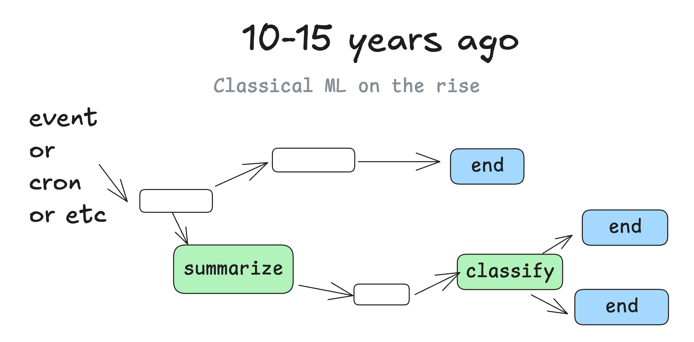
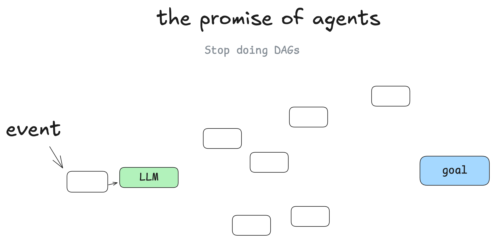
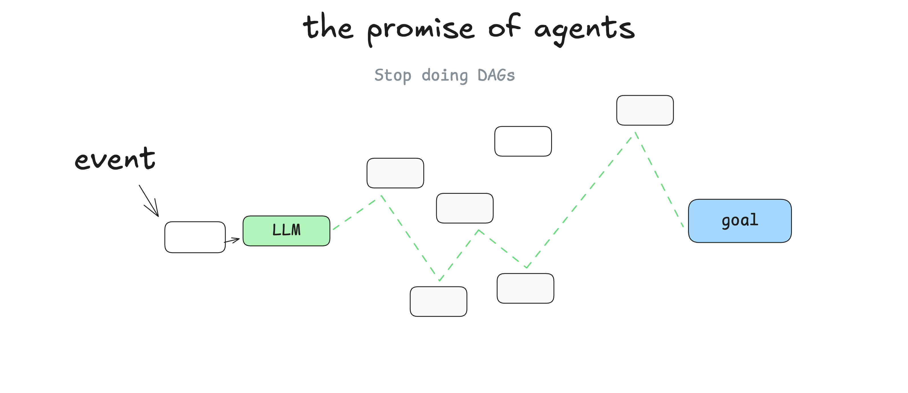
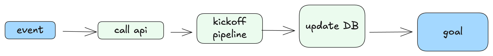
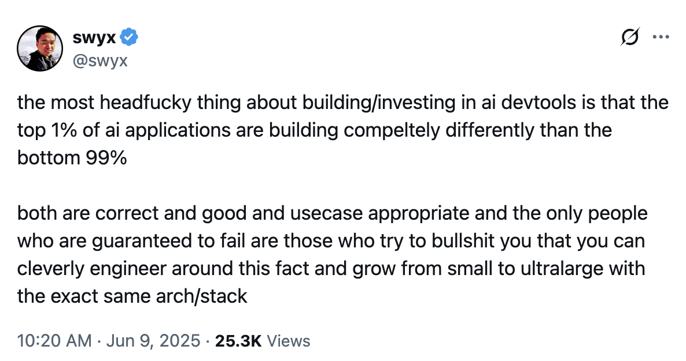
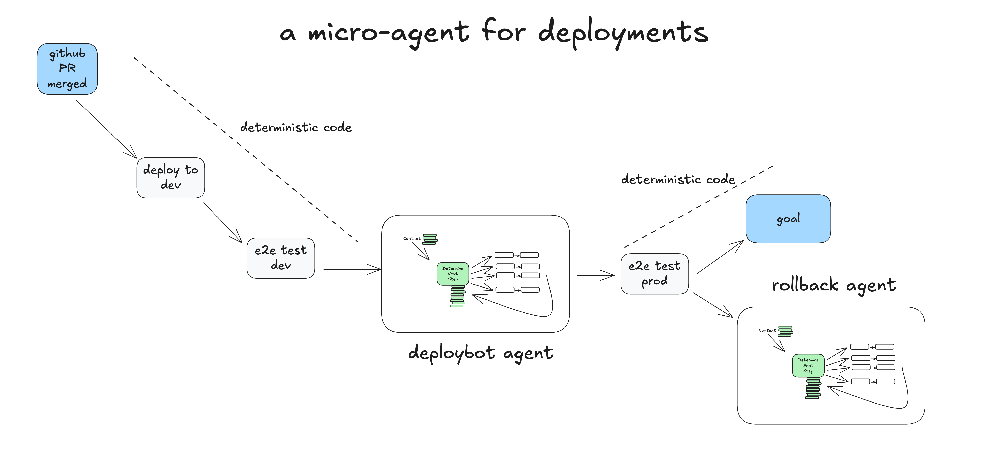
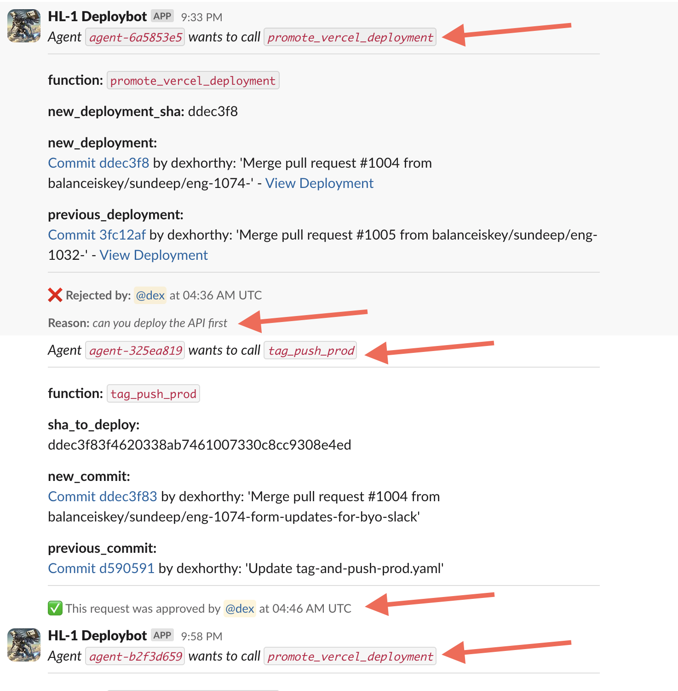
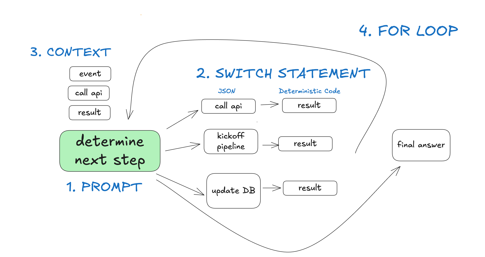

長版：我們怎麼走到這裡
你不一定要聽我的
不管你剛接觸代理，還是像我一樣又老又難搞的老鳥，我都想試著說服你：把你對 AI 代理的大部分想法先擱在一邊，退一步，從第一原理重新想一遍。（沒跟到 OpenAI responses 幾週前發布的話算暴雷，但把更多代理邏輯推到 API 後面，絕對不是答案。）
代理就是軟體，以及這段歷史
來談談我們怎麼走到這裡。
60 年前
接下來會一直提到有向圖（Directed Graphs，DGs），以及無環的那一類：DAG。先說一件事：軟體就是有向圖。以前我們用流程圖表示程式，不是沒道理。

20 年前
大約 20 年前，DAG 編排器開始流行。經典的像 Airflow、Prefect，還有一些更早的前身，以及比較新的 dagster、inngest、windmill。它們都遵循同一套圖形模式，另外帶來可觀測性、模組化、重試、管理等好處。

10 到 15 年前
ML 模型開始好用到派得上用場之後，我們看到 DAG 裡開始串進 ML 模型。你可以想像那種步驟，例如「把這一欄的文字摘要成新的一欄」，或「把客服問題依嚴重程度或情緒分類」。

但說到底，它主要還是那套熟悉的確定性軟體。
代理的承諾（The promise of agents）
我不是第一個這樣講的人，但我剛開始學代理時最大的心得是：你可以把 DAG 丟掉。軟體工程師不必再逐一寫死每個步驟與邊界情況，改成給代理一個目標和一組轉移：

讓 LLM 即時做決定，自己找出路徑。

這裡的承諾是：你寫的軟體更少，只要把圖的「邊」交給 LLM，讓它自己想出節點。你能從錯誤中恢復、能少寫很多程式，還可能發現 LLM 找到你沒想到的解法。
代理就是迴圈（Agents as loops）
換個說法：代理裡面有這樣一個迴圈，由 3 個步驟組成：
- LLM 決定工作流的下一步，輸出結構化 JSON（「工具呼叫」）
- 確定性程式碼執行這個工具呼叫
- 結果附加到脈絡視窗
- 重複，直到下一步判定為「完成」
initial_event = {"message": "..."}
context = [initial_event]
while True:
next_step = await llm.determine_next_step(context)
context.append(next_step)
if (next_step.intent === "done"):
return next_step.final_answer
result = await execute_step(next_step)
context.append(result)初始脈絡只有起始事件（可能是使用者訊息、可能是 cron 觸發、也可能是 webhook），我們請 LLM 選出下一步（工具），或判定已經完成。
以下是多步驟範例：

{kind=link}
而最後「具現化」出來的 DAG，看起來會像這樣：

「迴圈到問題解決為止」這個模式的問題
這個模式最大的問題有兩個：
- 脈絡視窗太長時，代理會迷失方向，一直重試同一套行不通的做法，轉不出來
- 真的就這樣，但這已經足以讓整個做法癱瘓
就算你沒自己手寫過代理，用代理化的寫程式工具時大概也遇過這種長脈絡問題：跑一陣子之後它就迷路了，你得重開一個對話。
我還想提出一件我聽過不少次、而你自己大概也已經有一套直覺的事：
就算模型支援的脈絡視窗越來越長，用小而聚焦的提示與脈絡，結果永遠更好
多數跟我聊過的開發者，發現對話超過 10 到 20 輪就會變成一團亂、LLM 救不回來之後，就把「工具呼叫迴圈」這個想法擱到一邊了。就算代理有 90% 的時間做對，距離「夠格交到客戶手上」還是差得遠。你能想像一個網頁應用程式有 10% 的頁面載入會當掉嗎？
2025-06-09 更新：我很喜歡 @swyx 的說法：

真正可行的做法：微型代理（micro agents）
我確實在真實世界看過不少次的做法，是把代理模式撒進一個更龐大、更確定性的 DAG 裡。

你可能會問：「那這種情況下幹麼還用代理？」這問題我們稍後會談。簡單說，讓語言模型管理一組範圍明確的任務，就能輕鬆把即時的人為回饋接進來，轉成工作流步驟，又不會陷入脈絡錯誤的迴圈。（要素 1、要素 3、要素 7）
讓語言模型管理一組範圍明確的任務，就能輕鬆把即時的人為回饋接進來……又不會陷入脈絡錯誤的迴圈
一個真實的微型代理（A real life micro agent）
以下例子說明確定性程式碼如何跑一個微型代理，負責處理部署流程中需要人為介入的步驟。

- 真人把 PR 合併進 GitHub 的 main 分支
- 確定性程式碼部署到 staging 環境
- 確定性程式碼對 staging 跑端到端（e2e）測試
- 確定性程式碼交給代理做正式環境部署，初始脈絡是：「deploy SHA 4af9ec0 to production」
- 代理呼叫
deploy_frontend_to_prod(4af9ec0) - 確定性程式碼為這個動作請求人為核准
- 真人拒絕這個動作，並回饋「可以先部署後端嗎？」
- 代理呼叫
deploy_backend_to_prod(4af9ec0) - 確定性程式碼為這個動作請求人為核准
- 真人核准這個動作
- 確定性程式碼執行後端部署
- 代理呼叫
deploy_frontend_to_prod(4af9ec0) - 確定性程式碼為這個動作請求人為核准
- 真人核准這個動作
- 確定性程式碼執行前端部署
- 代理判定任務已成功完成，收工
- 確定性程式碼對正式環境跑端到端測試
- 確定性程式碼任務完成；或交給回復代理（rollback agent）檢視失敗並視情況回復
{kind=link}
這個例子取材自一個真實的開源代理，我們用它管理 Humanlayer 的部署。以下是我上週跟它的真實對話：

我們沒給這個代理一大堆工具或任務。LLM 在這裡的主要價值，是解析真人的純文字回饋，並提出更新後的行動方案。我們盡可能隔離任務與脈絡，讓 LLM 專注在一個 5 到 10 步的小型工作流上。
這裡還有另一個比較傳統的客服／聊天機器人示範。
所以代理到底是什麼？
- 提示（prompt）：告訴 LLM 該怎麼表現、有哪些「工具」可用。提示的輸出是一個 JSON 物件，描述工作流的下一步（也就是「工具呼叫」或「函式呼叫」）。（要素 2）
- switch 陳述式：根據 LLM 回傳的 JSON 決定怎麼處理。（要素 8 的一部分）
- 累積的脈絡：儲存已經發生過的步驟與結果（要素 3）
- for 迴圈：直到 LLM 發出某種「終止」工具呼叫（或純文字回覆）為止，把 switch 陳述式的結果加進脈絡視窗，再請 LLM 選下一步。（要素 8）

在「部署機器人」這個例子裡，自己掌握控制流與脈絡累積帶來幾個好處：
- 在我們的 switch 陳述式與 for 迴圈裡，可以攔下控制流，暫停等待人為輸入，或等待長時間任務完成
- 可以輕鬆把脈絡視窗序列化，方便暫停與恢復
- 在提示裡，我們能盡情最佳化指令的傳遞方式，以及「目前為止發生了什麼」的呈現方式
第二部分會把這些模式形式化，讓它們能套用到任何軟體專案，加上亮眼的 AI 功能，而不必全盤接受傳統對「AI 代理」的實作與定義。